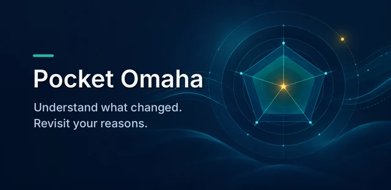

Everyday tools
Pocket Omaha
Understand what changed in the companies you follow. Revisit your reasons.
Find a little movement for today, using the equipment you already have.

Mișcare is on Google Play for Android 7.0 or newer, in production since version 0.1.1 (3 November 2026). It bundles guided routines, 45 illustrated exercises, 12 interface languages, a light or dark theme, and a local workout journal with JSON backup. No account, server, or Internet permission is required.
Version 0.1.1 shows every screen in your chosen language, counts timed holds in seconds rather than repetitions, and keeps "From zero" at your level even with bodyweight only. It also adds a dark theme, and the time estimate now follows the number of sets you choose.
To install by hand instead, download the signed APK from GitHub Releases. It carries a different signature from the Play version, so neither can update the other: export your data before switching. The Android app does not import PWA history, and JSON import replaces the current profile and journal. See the installation and backup guide for checksums, signing, and remaining checks. Reminders are not implemented.
Start from zero. Move at your own pace. No guilt, just adjustment.
Mișcare is an adaptive exercise app with an Android app on Google Play and a self-hosted web edition. It is designed for beginners and people returning after a break, with short routines, equipment choices, and a journal. Progression is a choice, and rest days carry no lost-streak penalty.
Upon opening the app, users are greeted directly with "Today's Session" — ready to launch with a single tap. If life gets busy, a one-click "Make it 5 minutes" option shortens the workout. If life gets in the way for days, there are no broken streaks or guilt messages; the app simply welcomes you back with a gentle re-entry routine.
The self-hosted PWA uses Vanilla JavaScript, Node.js and SQLite, with pwa-kit updates and pwa-invite-console device invitations. The Android app bundles the interface and adaptive engine in Capacitor, stores its profile and journal locally in IndexedDB, and is updated through Google Play or by installing a newer signed APK.


pwa-kit for network-first service worker caching with content-hash version stamping and non-disruptive update prompts.pwa-invite-console pairing codes (XXXX-YYYY-ZZZZ) issuing secure, long-lived device session tokens.Vanilla JavaScript (ES Modules) without build-step overhead, responsive CSS custom properties, custom Web Audio synthesis, and Service Worker offline caching.
The PWA uses Node.js 24, native node:sqlite, and Express REST endpoints. The Android build runs the shared routine engine locally and needs no backend.
Native contract compatibility with pwa-kit for version lifecycle management and pwa-invite-console for invite token redemption and device management.

Understand what changed in the companies you follow. Revisit your reasons.

Thread your way through gravity wells in a retro physics arcade game.

Give big family expenses a plan, from the first estimate to the last installment.